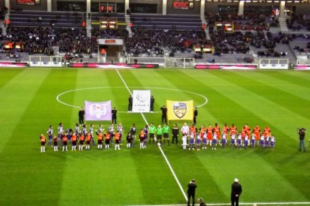

У матчі беруть участь лише дві команди. Кількість гравців з кожної сторони обмежується одинадцятьма з урахуванням воротаря. Єдиним снарядом вважається м'яч. Польові гравці мають право контролювати і бити по ньому тільки ногами, за винятком викидання ауту. Правила воротаря у футболі трохи відрізняються. Голкіпери можуть ловити м'яч руками, але утримувати снаряд у повітрі заборонено більше 6 секунд. Основні правила футболу єдині для всіх асоціацій і турнірів, що проводяться під егідою ФІФА. Так, кількість замін не може бути більше трьох офіційних змаганнях. Є певні вимоги і до екіпірування футболістів. Вона не повинна становити небезпеку для самого гравця або суперника. Заборонені будь-які ювелірні вироби, шпильки, годинник і т. д. Обов'язковими елементами є сорочка, шорти, щитки, гетри та взуття. Рукавички тільки у голкіпера.
Тривалість матчу-два тайми по 45 хвилин. При цьому суддя може додавати певну кількість часу за затримки ігри (заміни, травми і тощо). Між таймами повинен бути перерву до 15 хвилин.
Дотримання правил футболу контролюється тільки арбітром матчу і його помічниками за межами поля. Суддя визначає порушення, покарання за них, виявляє спірні моменти. Всі його рішення є остаточними.

Вимоги до поля
Покриття повинно бути у вигляді газону, або штучного або натурального. Поле має форму прямокутника. Ширина (лінія воріт) може бути від 64 до 75 м, довжина – від 100 до 115 м відповідно. Також правила гри у футбол описують і вимоги до розмітки. Поле повинно обмежуватися білими рівними лініями, які добре видно здалеку (8-12 см в ширину). Крім того, розмітка ділить газон на дві половини. Посередині чертится спеціальний круг з радіусом 915 м від центру поля.
Порушення правил
У сучасному регламенті чітко прописані всі аспекти недисципліновану поведінку футболістів та тренерів. Штрафний удар призначається за підніжку, удар суперника, стрибок в ноги, агресивний поштовх, плювок, затримку противника або часу, навмисне торкання м'яча рукою. Подібне порушення в своєму штрафному майданчику карається 11-метровим (пенальті). Окремим видом покарання є вільний удар. Він виконується за певні порушення в штрафній площі: небезпечну гру проти суперника, контроль м'яча воротарем більше 6 секунд, дотик руками снаряда голкіпером після пасу партнера по команді. Такий удар виконується з місця фолу. Сучасні правила гри в футбол чітко визначають дії суддів щодо дисциплінарних санкцій. Жовта картка (попередження) дається за неспортивну поведінку, ненормативну лексику, систематичні порушення, зняття екіпіровки, затягування часу матчу. Обов'язково повинен каратися грубий і тактичний фол. Гравець видаляється з поля за два попередження, агресивна поведінка, плювок в кого-небудь, перешкода польоту м'яча у ворота рукою, за фол, який призвів до пенальті, за образи і заборонені жести.